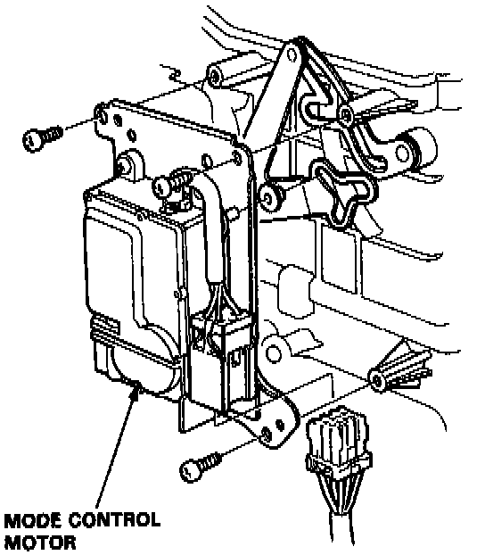

Operation CHARM
: Car repair manuals for everyone.
Home
>>
Acura
>>
1992
>>
Legend Coupe V6-3206cc 3.2L SOHC FI
>>
Repair and Diagnosis
>>
Heating and Air Conditioning
>>
Air Door
>>
Air Door Actuator / Motor
>>
Service and Repair
>>
Mode Control Motor
>>
Automatic Climate Control
Automatic Climate Control

1.
Remove the heater-evaporator unit.
Service and Repair
2.
Disconnect the mode control motor connector.
3.
Remove its mounting screws and the mode control motor.